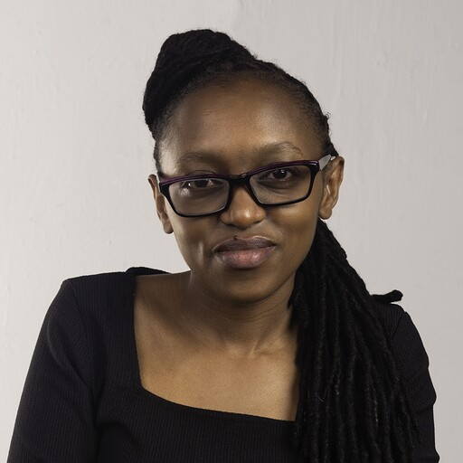

"Bridging the gap between complex technical infrastructure and national health outcomes — at the speed governments need."

I am a computer scientist, data scientist, and executive strategist with 17+ years of progressive impact — from engineering Safaricom's billing infrastructure to directing AI and digital health strategy across Africa, Asia, and beyond.
What makes me rare: I carry both the technical depth to architect ML pipelines, design data governance frameworks, and write production code, and the executive fluency to secure $60M+ in funding, chair global digital health committees, and counsel Ministries of Health on national-scale transformation.
I led Kenya's national Electronic Community Health Information System (eCHIS) scale-up to all 47 counties, digitized 100k+ community health workers, and am currently a WHO Expert Member on Digital Public Infrastructure in Health. I pursue a Master's in Information & Data Science at UC Berkeley alongside my executive responsibilities — because I believe a great Chief must remain technically sharp.
My work operates at the intersection of Responsible AI · Digital Public Infrastructure · Government Partnerships · Health Systems Strengthening — always Africa-led, always equity-centered, always built to last beyond donor cycles.
Open to Chief-level roles in Digital Health, AI Strategy, and Digital Public Infrastructure.